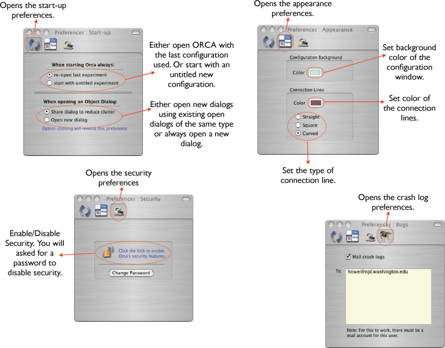

A note about enabling the auto bug reporting. You must configure a mail app (i.e. Mail) with all of the correct e-mail account information for the user that is running ORCA. Otherwise, the crash logs will not be mailed.